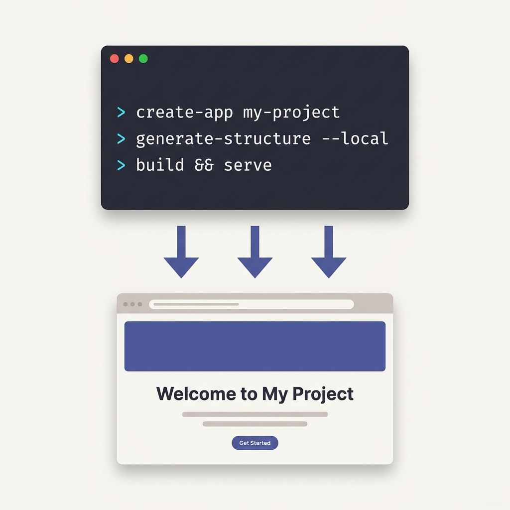

Chapter
01
The Local-First Design Machine
What Open Design is and why generation runs on your machine
Open Design moves brand-compliant design generation from a vendor's cloud onto your own machine, driven by the AI coding agent you already use.
Trademark notice: product names referenced in this chapter (Claude Code, Cursor, GitHub Copilot, OpenCode, Codex CLI, Gemini CLI, Kimi CLI, Figma, Linear, Stripe, Anthropic, OpenAI, Azure, and Google Gemini) are trademarks of their respective owners, used here for identification only. This book and Open Design are independent and not affiliated with, sponsored by, or endorsed by any of those trademark owners. All feature counts and version references reflect Open Design as of June 2026; verify current state at github.com/nexu-io/open-design.
1.1 From Cloud Design Tools to Local-First Generation
Why where generation runs is a product decision, not a technical footnote
Picture this: you type a prompt, a branded landing page assembles itself in a sandboxed preview window, and nothing about that exchange ever touches a vendor's server. The prompt, the brand tokens, the generated artifact, the revision history --- all on your machine. That is the value proposition of Open Design, and it is meaningfully different from every hosted design AI that came before it.

od init, od generate, od preview), and the rendered artifact appears on your own machine.The dominant design AI tools of the mid-2020s share a common architecture: you send a prompt to a cloud service, the service generates an artifact, and the result is stored on the vendor's infrastructure. That model is convenient. It is also a dependency. Your prompts describe your unreleased products. Your brand tokens encode decisions your competitors don't have yet. Your generation history is a record of your design process. When all of that lives on a vendor's server, you are trusting that vendor with something more sensitive than most teams realize.
Local-first is a response to that dependency. In Open Design, the orchestration layer --- the daemon that receives your prompts, selects skills, resolves brand systems, and writes artifacts to disk --- runs on your hardware. Open Design v0.9.0 documents no telemetry collection and no Open Design servers; the project files live at .od/projects/<id>/ on your own machine, and the application state lives at .od/app.sqlite next to them. (Source: Open Design architecture documentation, v0.9.0, github.com/nexu-io/open-design/docs/architecture.md.)
The cost argument reinforces the architecture argument. A team running 50 generation cycles per day on a hosted service pays for every one of those cycles. With Open Design, the compute cost is borne by whichever model provider you choose to route to --- and you can route to a free local model if you want. There is no Open Design subscription. Apache-2.0. The product is free.
The independence argument is subtler but, for a design team, more durable. Cloud design tools can sunset features, change pricing, or simply disappear. Open Design is Apache-2.0 open source. You can fork it. You can pin a version. You can run it offline if you pair it with a local model. That kind of sovereignty is rare in a design toolchain.
There's a practical side to this that doesn't get discussed enough: local-first means you can use Open Design on a plane, in a data-center-free office, or behind a corporate firewall that blocks outbound API calls --- as long as you have a local model configured. The hosted tools don't have that option. I've done actual client work in airplane mode with a local Ollama model and the daemon running on my laptop. That capability isn't a party trick; for some teams it's the deciding constraint.
The headline numbers --- 150 brand systems, 261 plugins, 21 supported CLIs (as of June 2026) --- are a feature surface, not the daily-use surface. The local-first architecture is the real reason to adopt Open Design. I've watched teams reach for the tool because the catalog impressed them and then stay because they realized their generation history wasn't sitting on anyone else's servers. Pick the tool for where generation runs and who controls it. The catalog is a nice bonus.
1.2 What Open Design Actually Is
A desktop app plus daemon that lets coding agents produce design artifacts on your machine
Open Design is a local-first, open-source desktop application that gives AI coding agents a structured environment for producing brand-compliant design artifacts. As of June 2026, it ships as v0.9.0 (released June 2, 2026), carries 63,000+ GitHub stars (per the project README header, verified June 11, 2026; the star count will continue to change — check github.com/nexu-io/open-design for current figures), and is licensed under Apache-2.0 with no subscription required.
The concrete feature set: as of June 2026, Open Design ships over 100 skills for guiding artifact generation (the v0.9.0 README documents 259+ skills; the book uses 100+ as a conservative floor that the project clearly exceeds), approximately 150 portable visual brand systems (the official website lists 150; the README states 142+, reflecting a bundled-versus-API count difference — both figures align around 150 as of June 2026), 261 official plugins across artifact categories (per the Open Design plugin library, June 2026), and native support for 21 coding-agent CLIs (the README lists 9 named CLIs plus "17+ others"; 21 is the defensible named-and-auto-detected count as of v0.9.0). It exports to HTML (inlined), PDF, PPTX, MP4, ZIP, and Markdown. It runs the same experience on macOS, Windows 10/11 (x64), and Linux.
| Dimension | Value | Last verified |
|---|---|---|
| Current version | v0.9.0 (released June 2, 2026; codename "Design for everyone") | June 2026 |
| GitHub stars | 63,000+ | June 2026 |
| License | Apache-2.0; no subscription | June 2026 |
| Skills | 100+ (conservative floor; v0.9.0 README documents 259+ skills — both figures sourced from github.com/nexu-io/open-design) | June 2026 |
| Brand systems | 150 (website: 150; README: 142+; both sourced from open-design.ai and github.com/nexu-io/open-design as of June 2026) | June 2026 |
| Official plugins | 261 | June 2026 |
| Supported agent CLIs | 21 (including Claude Code, Cursor, GitHub Copilot, OpenCode, Codex CLI, Kimi CLI, and others) | June 2026 |
The architecture behind those numbers is a desktop application built on Next.js 16 and React 18, a local Node 24 Express daemon, better-sqlite3 for application state, and an Electron shell for the native desktop experience. The preview is rendered inside a sandboxed srcdoc iframe --- generated code is isolated from your system by default.
The install path is deliberately low-friction. You can download a prebuilt application for your operating system and have Open Design running in under five minutes. The one-line CLI installer handles connecting your first coding-agent CLI:
$ curl -fsSL https://open-design.ai/install.sh | sh -s claude-codeThe v0.9.0 release shipped with 310 pull requests from 98 contributors (per the official v0.9.0 release notes, github.com/nexu-io/open-design/releases/tag/open-design-v0.9.0), signaling a project that is well past its initial proof-of-concept phase. The star trajectory tells the same story: from roughly 21,000 stars in early May 2026 to 63,000+ by mid-June 2026 (early-May figure from community tracking; 57,400 mid-May per Augment Code blog, May 2026; 63,000+ per project README, June 11, 2026 — verify against current README on publication date). That growth is rapid but consistent with a tool that addresses a previously-unmet need rather than riding a trend.
Chapter 02 covers the three install paths in detail. This chapter is about understanding what you are installing and why it is designed the way it is.
1.3 The Three Layers: Brain, Workshop, Window
The mental model that makes everything else in this book legible
Open Design is a machine with three layers. Once you hold this model, every feature described in this book falls into one of the three slots. The brain receives intent. The workshop executes. The window shows you the result. Everything runs on your machine --- the cloud, if you use it at all, is an optional extension of the brain.
Layer 1: The Brain
The brain is your coding-agent CLI: Claude Code, Cursor, GitHub Copilot Chat, OpenCode, Codex CLI (OpenAI Codex), Gemini CLI, Kimi CLI, or any of the 21 supported CLIs as of June 2026. The brain accepts natural-language prompts and translates them into design instructions the daemon can execute.
The brain connects to Open Design via MCP (Model Context Protocol) --- an open standard that lets an AI agent connect to external tools. Open Design exposes its daemon as an MCP server; your CLI registers it as a tool. From that point, prompts in your CLI become generation requests on your machine.
The brain is the one layer that may involve a cloud call. If you route to Anthropic, OpenAI, Azure, or Google, the model inference happens off-machine. If you route to Ollama, the model runs locally. Everything else --- file storage, skill selection, brand resolution, artifact rendering --- stays on your machine regardless.
Layer 2: The Workshop
The workshop is the local daemon: a Node 24 Express server running at port 7456 on your machine. It owns three things: the skill registry (the 100+ skill instructions that shape what an artifact looks like — 259+ as of v0.9.0), the design-system resolver (the 150 brand DESIGN.md files that govern colors, type, and voice), and artifact storage (the project files at .od/projects/<id>/).
When you send a prompt through your CLI, the workshop receives the generation request, selects the right skill, resolves the brand system you specified, calls the model through whichever provider you configured, and streams the resulting artifact back to the window. Every file the workshop touches lives at .od/ on your local filesystem. The daemon can run entirely without network access if you pair it with a local model.
Layer 3: The Window
The window is the Next.js 16 frontend and the sandboxed preview iframe. The frontend shows your project history, your brand selection, and the live preview. The preview itself is a srcdoc iframe with sandbox="allow-scripts" --- generated HTML runs inside it, isolated from your browser session and your filesystem. The streaming artifact parser parses the SSE stream from the daemon and renders partial HTML as it arrives, so you see the artifact building in real time.
When you export, the same artifact content leaves the iframe and goes through the export pipeline: inlined HTML, PDF, PPTX, MP4 (via HyperFrames), ZIP, or Markdown. Chapter 08 covers the divergences between what the sandboxed preview shows and what the exported file contains.
Your coding-agent CLI (Claude Code, Cursor, OpenCode, etc.) sending prompts via MCP
Local daemon (Node 24 + Express) with skill registry, brand resolver, and artifact storage — all on your machine
Next.js 16 frontend + sandboxed srcdoc iframe streaming the artifact as it builds
The cloud model --- if you use one --- sits outside this boundary. It extends the brain's reasoning capacity but never touches the workshop or the window. If you replace the cloud model with a local Ollama model, the entire machine runs on your hardware with no external calls.
This three-layer separation is not an accident of architecture; it is a design decision with consequences. It means you can swap the brain --- try Claude Code today, switch to OpenCode next quarter --- without touching the workshop. It means you can update the daemon (the workshop) independently of your agent CLI version. It means the window layer, the preview and export pipeline, can evolve without breaking how prompts flow in. Layered systems are more maintainable than monolithic ones. Open Design is built to be maintainable on your machine.
The phrase "on your machine" will recur throughout this book because it is the answer to nearly every architectural question. Where do files live? On your machine. Where does orchestration run? On your machine. Where does the brand contract get resolved? On your machine. The cloud, when you use it, is a computation service you rent for inference --- and even that is optional.
When something goes wrong in Open Design, the three-layer model tells you where to look first. The brain couldn't parse your prompt? Check the CLI connection. The artifact didn't match the brand? Check the workshop's skill and brand resolution. The preview looks different from the export? That's a window-layer divergence. Chapter 08 has the full troubleshooting table.
1.4 Who This Is For
Two reader profiles, one book
This book is written for two types of practitioners who end up in the same place: running brand-compliant design generation on their own machine, driven by the agent CLI they already use. The path to that destination looks different depending on where you start.
| Profile | Starting point | What they want from Open Design |
|---|---|---|
| Product designer adopting local-first AI | Familiar with Figma and design systems; has tried hosted AI design tools; skeptical of vendor lock-in or privacy trade-offs; not primarily a coder | A design generation tool they can run privately, with brand systems they control, without a subscription or a server dependency. The agent CLI is new; the design system workflow is familiar. |
| Design engineer | Comfortable in a terminal; writes component libraries and design tokens; uses a coding agent daily; wants design-as-code where brand specs and generated artifacts live alongside source code | DESIGN.md as a machine-readable brand contract, artifacts that export to production-adjacent code, brand-spec refactors via the code-refresh plugin, and the skills system as an extension point they can author against. |
Most of this book applies equally to both profiles. Chapter 05 (brand systems) and Chapter 09 (the plugin ecosystem, specifically the code-refresh-to-brand-spec scenario) go deepest for design engineers. Chapter 14 (for leaders and team leads) addresses the adoption conversation that neither profile typically leads alone.
If you are neither a designer nor an engineer but manage a team that contains both, Chapter 14 is the chapter for you. It covers the adoption scorecard and how to evaluate Open Design against your team's actual constraints. Chapters 01 through 13 build the mental model and technical foundation you'll need to have that conversation credibly.
The design engineer profile gets more leverage from Open Design than the product designer profile, at least initially. The skills and brand-system authoring, the code-refresh plugin, and the MCP integration are all designed around a practitioner who thinks in code. Product designers get the most value once their team has authored a solid house DESIGN.md and a set of custom skills --- at that point, generation feels like magic because someone else did the hard setup work. If you're a product designer, find the design engineer in your orbit and pair on Chapter 05 together. The investment pays back on every generation after that.
1.5 A Map of the Book
Sixteen chapters, three appendices, one arc from install to team-scale
The book moves from setup to system to scale. You'll go from a running daemon to a complete generation loop, then into the components that make that loop reliable --- skills, brand systems, artifacts, preview and export --- before stepping out to the ecosystem: plugins, MCP servers, agent-CLI choices, and multi-agent teams. The final chapters address adoption for leaders and a look at what comes after v1.0.
Ch 01–02: Mental model and three install paths
Ch 03: Generate, preview, iterate, export
Ch 04–08: Skills, brand systems, artifact types, preview and export pipeline
Ch 09–12: Plugins, MCP, agent CLIs, multi-agent teams
Ch 13–16: Production workflows, leadership, case studies, future
Chapters 01–02 establish the mental model and get you to a running daemon. This chapter frames the three-layer machine. Chapter 02 covers the three install paths and dissects the architecture in enough detail that every subsequent chapter makes structural sense.
Chapter 03 walks the complete four-beat loop: generate, preview, iterate, export. It is the one chapter I'd run a new user through on day one. Everything after it is elaboration on one of those four beats.
Chapters 04–05 open the workshop layer. Chapter 04 is the skills system --- what skills are, how they shape generation, how to author one. Chapter 05 is brand systems --- the 150 bundled DESIGN.md files (as of June 2026), the schema, and how to write a house brand contract that makes every artifact on-brand by default.
Chapters 06–08 cover the artifact catalog and the export pipeline. Chapter 06 is web and mobile prototypes. Chapter 07 is presentation decks, HyperFrames HTML-to-MP4 motion graphics, and AI image generation. Chapter 08 dissects the sandboxed preview and the six export formats.
Chapters 09–12 are the ecosystem. Chapter 09 covers the 261-plugin taxonomy (as of June 2026), the Figma-migration scenario, and the code-refresh-to-brand-spec plugin. Chapter 10 covers Open Design's MCP server and how to expose its generation capabilities to external agents. Chapter 11 compares the 21 supported agent CLIs (as of June 2026) so you can route by constraint, not by habit. Chapter 12 is multi-agent design teams.
Chapters 13–16 address production and scale. Chapter 13 is a real end-to-end project workflow. Chapter 14 is the adoption scorecard for team leads and decision-makers. Chapter 15 frames the durable layer (DESIGN.md, skills, brand contracts) versus the volatile layer (model versions, artifact schemas, CLI versions). Chapter 16 closes with the pipeline spine and what the project's trajectory means for practitioners planning ahead.
Three appendices round out the reference material: Appendix A is a complete CLI command reference, Appendix B is an agent-CLI comparison matrix, and Appendix C is a curated failure-modes catalog for when something goes wrong.
Next: Chapter 02 gets Open Design running on your machine. It covers the three install paths, the daemon, the file layout, and the sandboxed preview. By the end of it, you'll have a running workshop layer to feed the rest of the book.